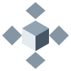

LATTICE PATCHBOARD
Sunlight to motion
Sense the world. Wire a response.
LATTICEVIRTUAL PATCHBOARD / A0
ENVIRONMENT INPUT
Sunlight
32.8 WAvailable generation
0.000 WhGenerated energy

LATTICE / PatchboardMIRRORFIELD / 0.5 ↗SIMULATEDSense the world. Wire a response.